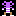
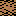
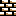
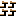
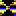
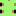

Rockford: 是你的应用， 指引他穿过山洞，寻找宝石来让出口显现出来。
沙土: Rockford 可以穿过沙土，大部分其他生物不能通过它。
墙壁: 墙壁可以阻断 Rockford 的去路， 幸运的是通过引爆萤火虫和蝴蝶可以炸坏它们。
魔力墙: 这种墙很特别，它可以把巨石转变为宝石，或者反过来。它只能在一定时间内起作用。
蝴蝶: 是另一个敌人， 它也不能碰。最重要的不同是蝴蝶被消灭是它会变成宝石！ 蝴蝶在没有阻碍的空间逆时针运动。
阿米巴: 黏黏的一块，会逐渐的变大。会变成巨石当它足够大的时候。 如果用巨石或墙围住它， 它会变成宝石。 萤火虫和蝴蝶碰到阿米巴就会被消灭。